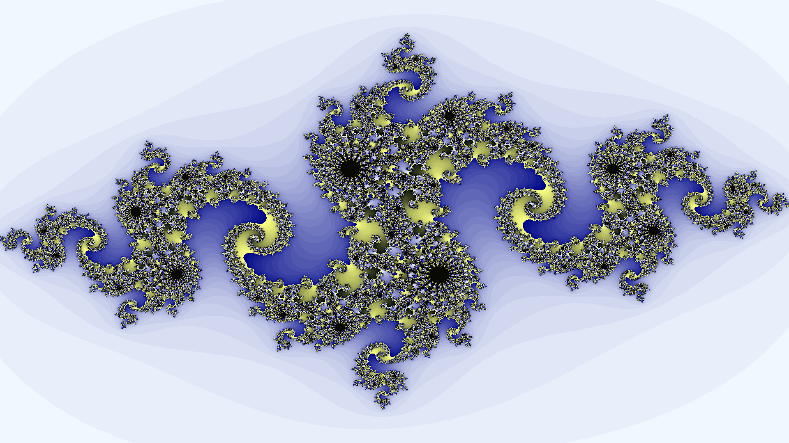

2026-03-23 · 约 5 分钟
当一个 dual 路线走不通时，我真正得到的东西
当两条最自然的 Lagrangian dual 路线都塌到 trivial 0 bound 之后，留下来的反而是一个和 Range(B)、cycle consistency 与 instance difficulty 相关的 dual-based structural score。
阅读全文研究记录、实验笔记与结构化的思考。

2026-03-23 · 约 5 分钟
当两条最自然的 Lagrangian dual 路线都塌到 trivial 0 bound 之后，留下来的反而是一个和 Range(B)、cycle consistency 与 instance difficulty 相关的 dual-based structural score。
阅读全文2026-03-14 · 约 6 分钟
从 classical greedy 的 theorem line，走到 LazyGreedy extension、StochasticGreedy skeleton 与一套可继续扩展的 Isabelle/HOL library。
阅读全文2026-02-07 · 约 3 分钟
从连续音频到可玩的谱面：起音检测、节拍网格、段落对齐与可玩性约束。
阅读全文2026-01-29 · 约 2 分钟
从纯数学走向优化研究：一个学期的研究训练与新的问题切入口。
阅读全文2025-12-29 · 约 4 分钟
在 Isabelle 中形式化单调子模函数下贪心算法的近似保证。
阅读全文2025-10-18 · 约 2 分钟
把可验证性嵌进证明过程：从动机到 Nemhauser–Wolsey theorem。
阅读全文